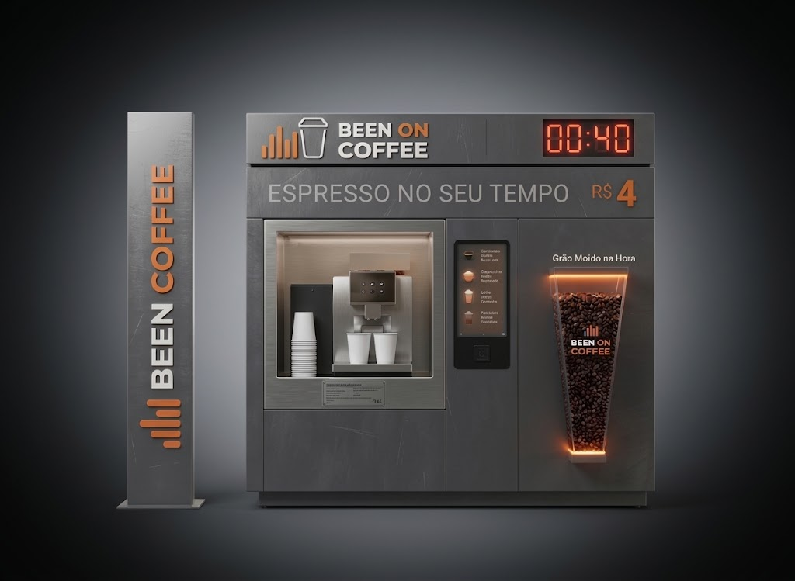
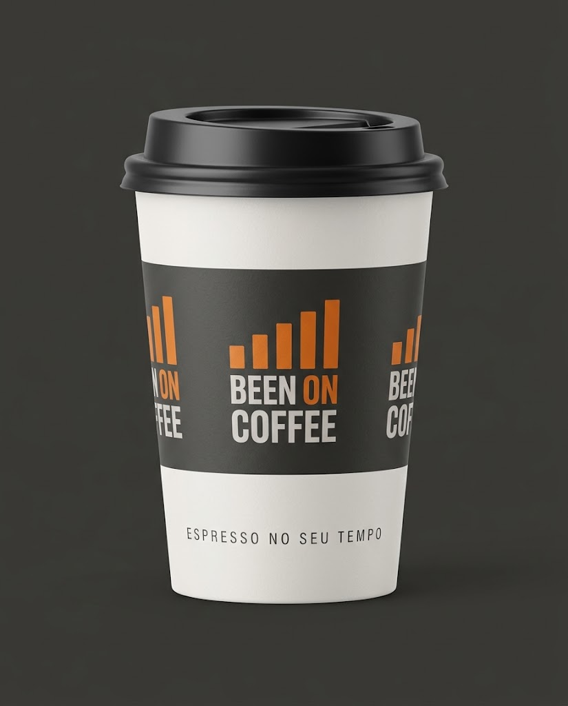
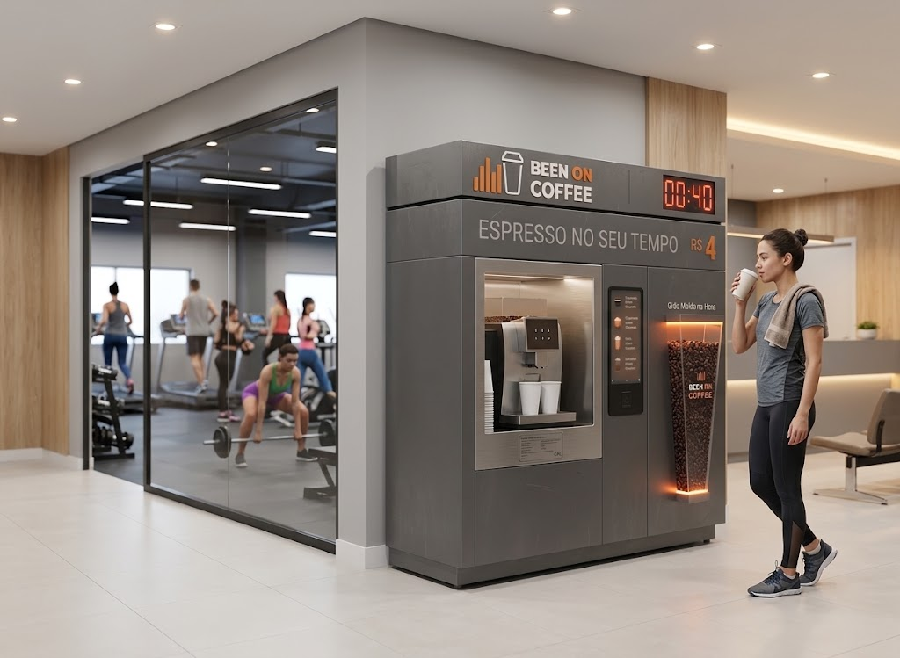
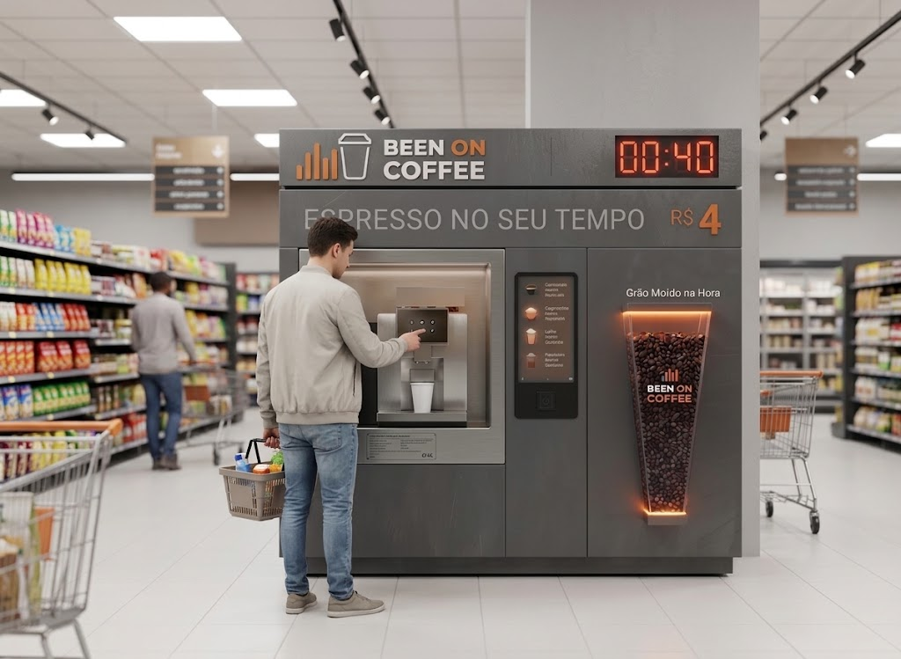
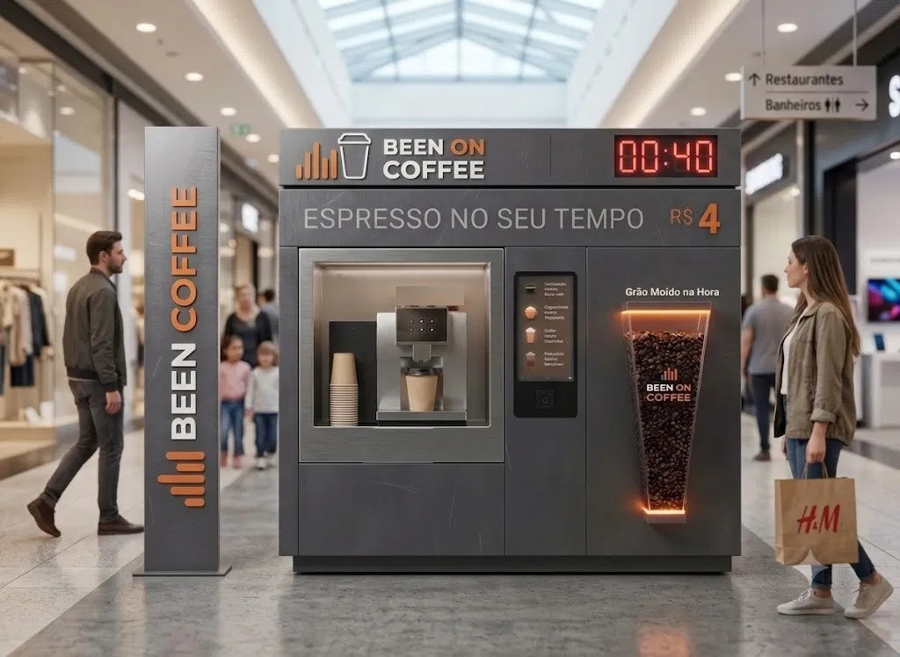
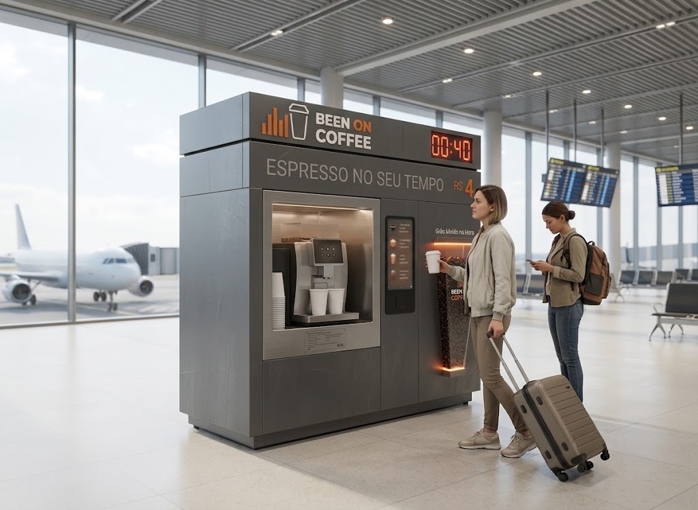
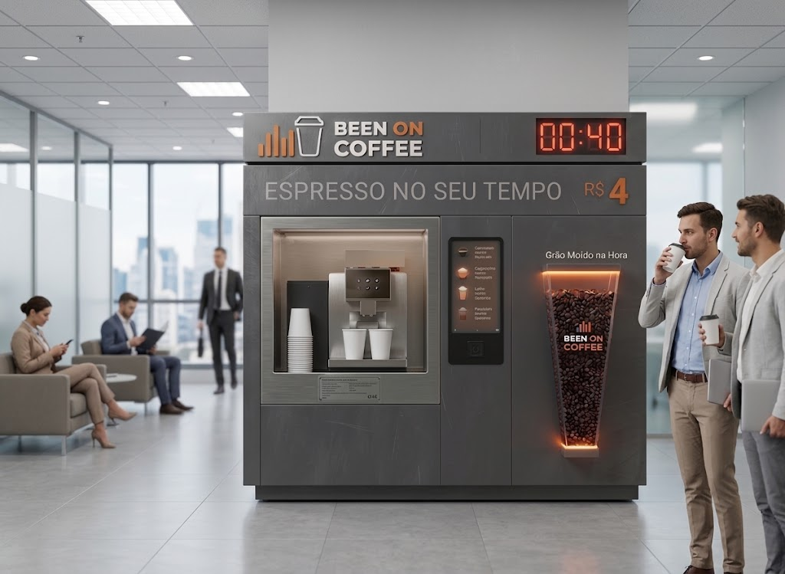

O café é o produto.
A liberdade é o negócio.
Quiosque de café automatizado em pontos de alto fluxo.
- R$ 72 mil quiosque completo
- 01 operador por turno
- ~6 m² de ponto
- 100% autoatendimento

A oportunidade
Todo mundo quer café. Ninguém quer fila.
O consumo fora de casa cresce e a experiência não acompanhou. O Been On Coffee ocupa esse espaço: café de qualidade, em segundos, no caminho das pessoas.
Demanda diária e recorrente
Café é hábito, não impulso. Quem passa hoje volta amanhã.
Venda em segundos, não em minutos
O cliente decide no fluxo de passagem. Sem mesa, sem comanda, sem espera.
O concorrente é a fila e a vending
Cafeteria cara e lenta de um lado, vending esquecível do outro. No meio, o seu cliente.
Cada ponto é exclusivo de um licenciado. Os melhores da sua praça saem primeiro.

Nossos diferenciais
Um café que vende sozinho no seu ponto
Três motivos pelos quais o cliente escolhe o Been On Coffee, e volta no dia seguinte.
-
Café com grão moído na hora
Cada xícara é moída no momento do pedido, padrão de cafeteria de especialidade, sem depender de barista.
Ver como funciona a operação › -
Preço de venda competitivo
Ticket abaixo da cafeteria tradicional atrai consumo recorrente e aumenta o volume de vendas do seu ponto.
Simular meu faturamento › -
Pronto em 40 segundos
Mais rápido que qualquer fila de cafeteria. O cliente pega o café e segue o caminho, sem desistir da compra.
Ver onde essa velocidade vende mais ›
O modelo
Por que um quiosque, e não uma loja?
Corta os maiores custos e riscos de uma cafeteria, sem abrir mão do café.
Menor investimento
Sem obra, salão ou cozinha, uma fração do custo de uma loja.
Equipe mínima
A máquina prepara, o totem cobra. Uma pessoa por turno, sem barista.
Instalação rápida
Módulo pré-fabricado montado em dias, não meses. O retorno começa antes.
Baixo estoque perecível
Poucos itens, longa validade, quase sem desperdício.
| Quiosque Been On Coffee | Cafeteria tradicional | |
|---|---|---|
| Investimento inicial | R$ 72 mil | R$ 300 mil ou mais |
| Obra civil | Nenhuma | Meses de reforma e alvarás |
| Equipe | 1 pessoa por turno | Baristas, caixa e cozinha |
| Tempo até abrir | 30–45 dias | 4 a 8 meses |
| Se o ponto não performar | O quiosque é realocado | A obra fica no imóvel |
← Arraste para o lado para ver a comparação completa →
Coluna "cafeteria tradicional": estimativas de mercado para comparação de formato, não cotações.
Operação
Uma operação que você aprende em uma semana
A máquina prepara, o totem cobra, o cliente se serve. É essa simplicidade que permite operar com uma pessoa por turno, e tocar mais de um quiosque.
-
O cliente escolhe no display
Expresso, cappuccino, latte e cold brew. Sem fila, sem atendente.
-
Paga por aproximação ou Pix
100% digital no totem. Sem caixa, sem dinheiro em espécie.
-
Retira o café pronto
Moído na hora por máquina profissional, pronto em menos de um minuto.
-
Operador reabastece e orienta
Uma pessoa por turno: repor, higienizar e receber bem.
Investimento
Quanto custa

Quiosque completo, valor aproximado
R$ 72.000
Inclui: máquina automatizada, totem de pagamento, mobiliário e estoque do 1º mês.
Valor aproximado e que não inclui capital de giro (nem frete e abertura de empresa).
Ajuste cafés/dia, ticket e ocupação e veja payback e lucro na sua realidade, sem cadastro.
Simulação ilustrativa. Não constitui promessa de rentabilidade nem oferta de licenciamento. Resultados variam conforme ponto, operação e mercado.
Suporte
Você abre com a rede, não sozinho
Não precisa ter experiência com café ou varejo. O que você precisa saber, a nossa equipe ensina.
-
1 semana de treinamento presencial
Você e seu operador aprendem na unidade-modelo, na prática.
-
90 dias de acompanhamento remoto
Nossa equipe acompanha seus números nos meses que mais importam.
-
Assistência técnica coordenada
Manutenção preventiva agendada e atendimento prioritário da fabricante.
-
Receitas calibradas remotamente
Blend exclusivo e padrão da bebida sem você virar barista.
O que a Been On Coffee entrega
- Análise do ponto, fluxo, público e custo de ocupação avaliados antes do contrato.
- Quiosque pronto para operar, com máquina, totem, mobiliário e comunicação visual.
- Blend exclusivo e cadeia de insumos, com fornecedores homologados e preço de rede.
- Manual de operação e treinamento, do reabastecimento à higienização diária.
- Assistência técnica coordenada, com preventiva agendada e prioridade na fabricante.
- Exclusividade do ponto, nenhum outro licenciado no seu empreendimento.
Localização
Onde um Been On Coffee funciona
O ponto define o resultado. Nossa equipe analisa fluxo, público e custo de ocupação com você, antes de qualquer contrato.
Frentes prioritárias da expansão: supermercados e academias são hoje onde há maior disponibilidade de ponto, com negociação de espaço mais simples e menos disputa por metro quadrado.

Supermercados e atacarejos
Fluxo constante de famílias, permanência longa na loja e o café entrando na compra, com negociação de espaço mais simples e rápida que a de shopping.

Academias e studios
Recepção e área de convivência: a mesma base de alunos passa ali várias vezes por semana, no pré e no pós-treino, com consumo recorrente e custo de ocupação baixo.

Shoppings classe A/B
Corredores e praças de alimentação: público consumindo o dia inteiro, com pico nos fins de semana e feriados.

Aeroportos e terminais
Passageiro com tempo de espera e pressa: café rápido antes do embarque, das primeiras às últimas horas do dia.

Centros empresariais
Lajes corporativas com centenas de funcionários no mesmo prédio: consumo diário concentrado nos intervalos.
Imagens ilustrativas do modelo de quiosque nos ambientes-alvo da expansão.
Também avaliamos:
Rede em implantação
Seja um dos fundadores da rede Been On Coffee
Estamos formando a primeira turma de licenciados. Você não verá aqui depoimentos inventados, e os melhores pontos ainda estão disponíveis. Quem entra agora escolhe a praça primeiro.
Quero ser da primeira turmaDúvidas frequentes
Perguntas que todo candidato faz
Qual é o investimento total?
R$ 72.000 (valor aproximado) pelo quiosque completo, com máquina, totem, mobiliário e estoque do 1º mês. Não inclui capital de giro, frete e abertura de empresa. Tudo detalhado por escrito antes de qualquer assinatura.
Quanto tempo leva para instalar?
De 30 a 45 dias após o contrato do ponto assinado. O quiosque chega pré-fabricado e é montado no local.
Preciso ter experiência com café ou varejo?
Não. São 1 semana de treinamento presencial na unidade-modelo (você + operador) e 90 dias de acompanhamento remoto. A máquina automatizada garante o padrão da bebida sem barista.
E se a máquina quebrar?
Assistência técnica com atendimento prioritário da fabricante, coordenada pela nossa equipe, além de manutenção preventiva agendada.
Terei exclusividade territorial?
Sim, por ponto: cada unidade tem exclusividade no empreendimento em que está instalada. Regras de raio e expansão constam do contrato.
E se o ponto não performar?
O quiosque é um módulo realocável, não uma obra. A Been On Coffee apoia a busca e a negociação de um novo local, conforme o contrato.
Posso ter mais de uma unidade?
Sim. O modelo enxuto favorece a multioperação, com estrutura leve de supervisão.
Quanto dá para ganhar?
Depende do ponto, do fluxo e de quem opera. Por isso não prometemos rentabilidade. No simulador você ajusta cafés/dia, ticket e custos e vê payback e lucro estimados. Simulação ilustrativa, não é promessa de resultado.
Como funciona o contrato?
Antes de qualquer assinatura ou pagamento, você recebe por escrito o investimento, as taxas, as obrigações e o território, com tempo para revisar com seu advogado ou contador de confiança.
Próximos passos
Do cadastro à inauguração, em 4 etapas
Preencher o formulário não compromete você a nada. É só o começo de uma conversa, e você recebe todos os números por escrito antes de qualquer assinatura.
-
Você se cadastra
Leva 1 minuto. Sem custo e sem compromisso.
Agora -
Conversa com a expansão
Entendemos seu perfil, seu capital e a praça que você quer. Você pergunta o que quiser.
Logo na sequência -
Assinatura e escolha do ponto
Com o contrato fechado, nossa equipe analisa e negocia o ponto com você.
Varia por praça -
Instalação e treinamento
Quiosque montado no local, 1 semana de treinamento presencial e 90 dias de acompanhamento.
30 a 45 dias
Cadastro
Quero fazer parte da Been On Coffee
Nosso time de expansão entra em contato logo na sequência. Sem custo, sem compromisso, e os melhores pontos da sua praça ainda estão disponíveis.
Cadastro recebido!
Nosso time de expansão entra em contato logo na sequência.